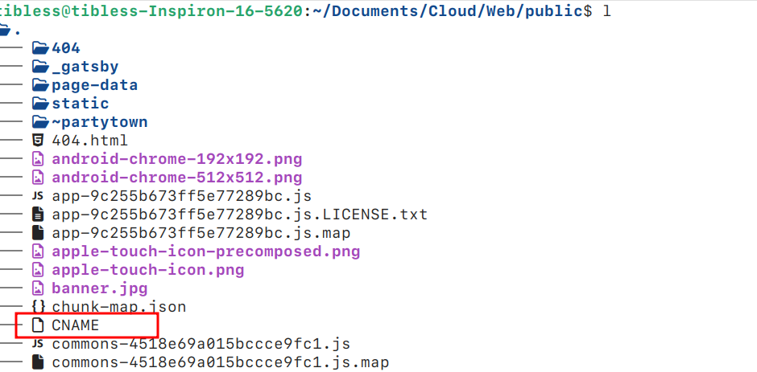
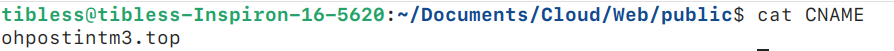

我的个人网站与博客（旧版网站，已弃用）
1. 这是如何运作的？
我的网站是使用 gatsby-themes 生成的静态网站，并部署在 GitHub Pages 上，而我的博客是手写的，同样部署在 GitHub Pages 上。如果您不熟悉如何使用 GitHub Pages，可以参考这篇 快速入门文章。
2. 部署步骤
2.1. 网站
2.1.1. 安装
- 克隆项目，删除
.git并添加自己的 Git 仓库：
git clone https://github.com/LekoArts/gatsby-starter-portfolio-cara.git
cd gatsby-starter-portfolio-cara
rm -rf .git
git init
git remote add origin 'your github page'
- 安装依赖：
npm install
npm install gh-pages --save-dev
- 在
package.json中添加脚本：
"scripts": {
"develop": "gatsby develop",
"deploy": "gatsby build --prefix-paths && gh-pages -d public",
"build": "gatsby build --prefix-paths"
}
并修改 gatsby-config.ts，以下是一个可修改的模板：
siteMetadata: {
siteTitle: `您的站点标题`,
siteTitleAlt: `您的站点副标题`,
siteHeadline: `对您的站点的简短描述`,
siteUrl: `https://您的域名.com`,
siteDescription: `适合SEO的站点描述`,
siteImage: `/您的图片.jpg`,
siteLanguage: `zh`,
author: `您的名字或昵称`,
}
- 构建并部署。
- 将分支设置为
gh-pages，作为部署分支。如果不清楚如何操作，可以咨询 GPT。 - 在
public文件夹下创建 CNAME 文件，内容为您的域名。 - 重新构建并部署。
- 然后您可以在自己的域名上看到模板网站。
2.1.2. 项目结构与命令
网站是通过 gatsby-themes 生成的，整个过程很简单：编辑 .mdx 文件并运行几条命令即可。网站主要分为四个部分：介绍、项目、关于和联系。要编辑这些部分的内容，只需修改位于 $project/src/@lekoarts/gatsby-theme-cara/sections 文件夹下的 .mdx 文件即可，其中 $project 为您的项目文件夹。这些文件在构建时会被转换为 HTML 并合并到 index.html 中。然后通过 npm run deploy 命令即可部署。以下是常用命令及其用途：
# npm run build
构建整个项目并将生成的文件放置到 $project/public 文件夹中。需要注意的是，在构建之前，请确保 public 文件夹中有一个 CNAME 文件，内容为您的域名。例如，我的域名是 ohpostint.top，CNAME 文件内容如下所示：


# npm run develop
构建后，可以通过此命令在本地预览网站，同时实时编辑 .mdx 文件。例如，运行该命令后，点击 本地服务器链接 即可在浏览器中查看。当修改 .mdx 文件时，例如 intro.mdx，更新会实时反映在浏览器中。

# npm run deploy
调试完成后，通过此命令将网站部署到您的域名。
2.3. 博客
我的博客不依赖代码生成工具。您只需使用 Typora 编写 Markdown 文件并导出为 HTML 文件（如 index.html 和 index_zh.html）。以下是撰写文章的步骤：
# 创建文章项目文件夹
在我的博客中，每篇文章是一个独立的项目，这意味着您需要将文章相关的所有文件存放在同一个文件夹中。这些文件夹位于 $project/post/ 中。例如，撰写一篇关于 PCA 算法的文章，步骤如下：
mkdir ./post/pca
cd ./post/pca
# 创建并编辑 index.md
进入文章项目文件夹后，即可开始撰写文章。如果文章中需要插图，请将图片放入 $project/post/pca/asset/ 文件夹。
# 转换为 index.html
编辑完成后，将 index.md 转换为 index.html，我使用 Typora 的导出功能完成此步骤。
# 在首页中引用
编辑项目根目录下的 index.md，在其中引用新文章。然后将根目录下的 index.md 转换为 index.html。
# 支持多语言
可以为多语言支持创建 index_xx.md 文件，这里的'xx'指的是你的目标语言。比如中文：index_zh.md，然后重复24。同时，你需要在每一个index文件的头部插入其它语言版本的跳转，比如在英文的index.md的头部要插入：
中文版：[zh](./index_zh.md)
同样的在中文版的index_zh.md中插入：
English: [en](./index.md)
由于我们的组织架构，这句话几乎是固定的，这也是我为什么选择这种结构，有点类似于B+树。
2.4. 博客设计的思考
2.4.1. 项目结构是如何设计的？
首页的内容在项目根目录的 index.html 中编辑。文章位于 $project/post/，每篇文章的文件命名为 index_*.html，其中 * 用于支持多语言版本。因此，您可以轻松引用所有文章。在每个文章文件夹中，可以存放该文章的图片、动画等资源，而不会影响其他文章。
2.4.2. 这种风格的设计来源是什么？
该风格受 这个网站 和 Typora 主题 Turing 的启发，符合极简主义设计风格。您可以在以下链接中获取相关 CSS 文件：index.css 和 hugo.css。